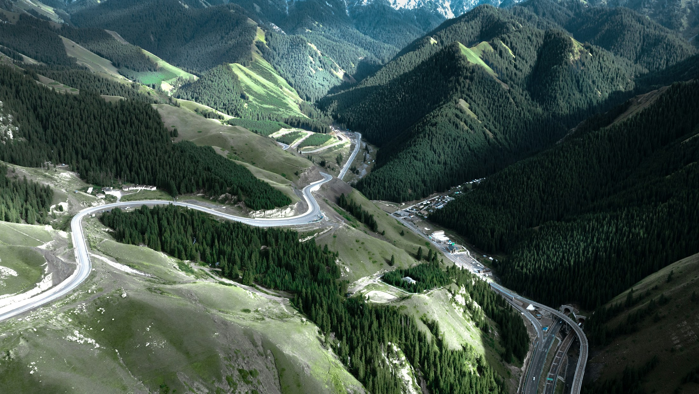

车与装备
合适的冬季轮胎、匹配轮胎尺寸的防滑链并练习安装。检查防冻液、玻璃水、蓄电池、制动、备胎和胎压。保暖衣物、饮水、食物与离线地图随车。
四驱改善部分路面的起步与通过能力，不能替代冰面制动能力。
地图为城镇位置与途经点连线示意，不是道路轨迹或导航。公里数为独立规划估算；出发前用导航复核当天道路。
已拆分多数长驾驶日；深冬进入新藏线仍需现场决定，延长旅行不会消除冬季风险。
按一人、自有车辆估算。所有价格都是可调整的预算假设，不是实时报价。
默认按燃油车计算；四驱不代表一定是油车。纯电选项仅换算费用，未核验全程充电可达性。
含行程内每晚住宿、额外机动天数和里程余量；不含购车、租车、折旧、出发地到丹东、东兴返家、重大维修和跨境旅行。路线改变后，通行费与门票仍是你设置的整程预留额。
选择后自动替换相应路段，重算地图、逐日日期与费用。备选路线同样需要临行确认。
留在有供暖、餐饮和燃料的城镇。不要到垭口、无人区或检查站门口等待。
问清普通小客车是否放行、限时与设备要求、下一段是否也通，以及当晚旅馆是否营业。
等待2—3天仍无明确恢复信息，就评估绕行；这不是对解封时间的预测。每增加一天，日历与预算一起顺延。

新疆公路风景示意，非本次季节路况。摄影：Weichao Deng / Unsplash
合适的冬季轮胎、匹配轮胎尺寸的防滑链并练习安装。检查防冻液、玻璃水、蓄电池、制动、备胎和胎压。保暖衣物、饮水、食物与离线地图随车。
四驱改善部分路面的起步与通过能力，不能替代冰面制动能力。
身份证、驾驶证、行驶证、车辆保险。边境通行证按实际地区和有效期办理；口岸、景区进入要求单独确认。
路线是规划建议，不是实时通行信息。每天公里数通常应预留约15%偏差，冬季时长可能明显增加。休息、午饭、检查和等候不包含在驾驶时长内。
默认10月1日只是便于推演，可改为真实出发日。机动天尚未分配到具体日期，预计终点给出区间。
资料核验：2026年9月28日。历史公告仅用于判断风险类别，不作为当前封路或放行结论。